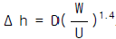
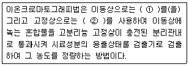
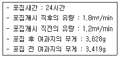
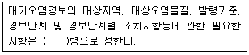

대기환경기사 (2004-09-05 기출문제)
1과목: 대기오염 개론
1. 다음중 페놀배출관련 업종과 가장 거리가 먼 것은?
- 타르공업
- 화학공업
- 정제공업
- 도장공업
(정답률: 알수없음)

2. 다음 대기오염의 역사적 사건중 가장 먼저 발생한 것은?
- 런던 스모그 사건
- 도노라 사건
- 포자리카 사건
- 요코하마(횡빈) 사건
(정답률: 알수없음)
3. 최대혼합고(Maximum Mixing Depth)에 관한 설명과 거리가 먼 것은?
- 열부상효과에 의한 대류에 의해 혼합층의 깊이가 결정되는데 이를 최대혼합고라 한다.
- 실제로 지표상 수 Km까지의 실제공기의 온도종단도를 작성함으로써 결정된다.
- 계절적으로 보아 여름(6월경)이 최대가 된다.
- 역전이 심할수록 큰 값을 가지며 대기오염의 심화를 나타낸다.
(정답률: 알수없음)
4. 질소산화물에 대한 설명 중 틀린 것은?
- 인위적인 질소산화물의 주배출원은 자동차와 연료의 연소과정이다.
- 대기에서 질소는 NOX cycle에서 지면으로의 침전과 질산염으로의 산화가 일어난다
- 대기에서 NOX의 체류시간은 대략 10-30일 범위이다
- 자연적인 NOX방출량은 인위적인 NOX방출량의 7-15배 정도이다.
(정답률: 30%)
5. 전형적인 자동차 배기가스의 구성중 가장 많은 부피를 차지하는 것은?(단, 엔진작동 상태는 정속주행이다)
- 탄화수소
- 이산화탄소
- 질소산화물
- 일산화탄소
(정답률: 알수없음)
6. 태양상수에 관한 일반적인 설명으로 가장 알맞는 것은?
- 대기권 밖에서 햇빛에 수직인 1cm2의 면적에 1분동안 들어오는 태양복사에너지의 양을 말한다(약 2cal/cm2ㆍmin)
- 대기권 밖에서 햇빛에 수직인 1cm2의 면적에 1시간동안 들어오는 태양복사에너지의 양을 말한다(약 2cal/cm2ㆍhr)
- 대기권 안에서 햇빛에 수직인 1m2의 면적에 1분동안에 들어오는 태양복사에너지의 양을 말한다(약 2cal/m2ㆍmin)
- 대기권 안에서 햇빛에 수직인 1m2의 면적에 1시간동안 들어오는 태양복사에너지의 양을 말한다(약 2cal/m2ㆍhr)
(정답률: 알수없음)
7. 경도풍(gradient wind)을 형성하는데 필요한 힘과 가장 거리가 먼 것은?
- 마찰력
- 전향력
- 원심력
- 기압경도력
(정답률: 알수없음)
8. 굴뚝에서 배출되는 plume의 수직변위를

으로 주어졌다. 지금 굴뚝의 내경은 2m, 풍속 3m/sec일 때 Δ h를 4m 까지 올리려고 한다면 배출가스의 분출속도는 얼마로 하여야 하겠는가?- 약 5 m/sec
- 약 8 m/sec
- 약 11 m/sec
- 약 14 m/sec
(정답률: 29%)
9. Fick의 확산방정식을 실제 대기에 적용시키기 위한 추가적 가정에 대한 내용과 가장 거리가 먼 것은?
- 고려된 공간에서 오염물의 농도는 균일하다.
- 과정은 안정상태이다.
- 바람에 의한 오염물의 주이동방향은 x축이다.
- 풍속은 x, y, z 좌표시스템내의 어느 점에서든 일정하다.
(정답률: 50%)
10. 대기오염물은 발생점에서 상당한 속도를 가지고 주위의 대기로 방출되는데, 보통질량이 대단히 적으므로 관성이 곧 줄어들고 후드에 의해서 쉽게 포획된다. 입자의 속도가 대략 0으로 줄어드는 위치를 무엇이라 하는가?
- dew point
- null point
- bubble point
- adsorption point
(정답률: 알수없음)
11. 질소 70%, 산소 6%, 이산화탄소가 24%인 혼합가스의 밀도는 얼마인가?(단, 무게%, 기압은 1기압이고, 온도는 25℃ )
- 1.25 g/L
- 1.29 g/L
- 1.31 g/L
- 1.35 g/L
(정답률: 알수없음)
12. 대기오염원의 영향을 평가하는 방법으로 분산모델에 관한 설명으로 가장 거리가 먼 것은?
- 지형 및 오염원의 조업조건에 영향을 받는다.
- 오염물의 단기간 분석시 문제가 된다.
- 분진의 영향평가는 기상의 불확실성과 오염원이 미확인인 경우에 문제점을 가진다.
- 측정자료를 입력자료로 사용하므로 시나리오 작성이 어렵다.
(정답률: 알수없음)
13. 식물의 잎의 밑부분이 은색 내지 청동색이 되고 점차 퍼져 윗 잎부분에 흑반병을 발생시키며 대표적 지표식물은 강낭콩, 시금치등이고 강한식물은 사과, 옥수수, 무우등인 대기오염물질로 가장 알맞는 것은?
- 오존
- 황화수소
- 질소산화물
- PAN 및 알데히드류
(정답률: 39%)
14. 굴뚝에서 배출되는 연기의 모양이 Fanning형인 경우, 대기에 관한 설명으로 틀린 것은?
- 대기가 매우 안정한 상태일 때 발생한다
- 대기 전체가 크게 오염현상을 일으킬 때 발생하는 연기형태이다
- 상하의 확산폭이 적어 지표에 미치는 오염도는 적으나 굴뚝의 위치가 낮을 경우 오염도는 상대적으로 커진다
- 최대 착지거리가 작고 최대 착지농도는 높다
(정답률: 알수없음)
15. Deacon법칙을 이용하여 지표높이 10m에서의 풍속이 4m/s일 때, 상공의 풍속이 12m/s인 경우의 높이는? (단, P = 0.4)
- 155m
- 215m
- 5⑤m
- 615m
(정답률: 알수없음)
16. 굴뚝높이가 60m, 배기가스의 평균온도가 137℃ 일 때, 자연통풍력을 1.5배 증가시키기 위해서는 배기가스의 온도는 얼마가 되어야 하는가? (단, 대기온도 27℃, 표준상태의 공기밀도는 1.3kg/m3)
- 약 230 ℃
- 약 280 ℃
- 약 320 ℃
- 약 370 ℃
(정답률: 알수없음)
17. 지표부근의 대기성분의 부피비율(농도)이 큰 것부터 순서대로 알맞게 나열된 것은?(단, 질소, 산소성분은 생략)
- 아르곤-탄산가스-메탄-수소
- 아르곤-탄산가스-수소-메탄
- 아르곤-탄산가스-헬륨-네온
- 아르곤-탄산가스-네온-헬륨
(정답률: 알수없음)
18. 어떤 공장의 현재 유효연돌고가 50m이다. 유효연돌고를 높여 최대지표농도를 1/2 로 감소시키고자 한다. 다른 조건이 모두 같다고 가정할 때 유효연돌고를 얼마로 높이면 되는가? (단, Sutton 식 적용)
- 약 55 m
- 약 65 m
- 약 71 m
- 약 81 m
(정답률: 알수없음)
19. 파장 5,200Å인 빛 속에서 밀도가 1.2g/cm3이고, 직경 0.2㎛인 분진의 분산면적비가 3일 때 분진농도가 (0.3× 10-3)g/m3이라면 가시거리(V)는? (단, V =[ (5.2ㆍρ ㆍr)/(KㆍC) ] 식 적용 )
- 465m
- 693m
- 931m
- 1,380m
(정답률: 28%)
20. 기온역전의 발생을 가장 알맞게 설명한 것은?
- 이류성 역전 - 따뜻한 공기가 차가운 지표면 위로 불 때 발생
- 침강형 역전 - 저기압 중심부분에서 기층이 서서히 침강할 때 발생
- 해풍형 역전 - 바다에서 더워진 바람이 차가운 육지 위로 불 때 역전 발생
- 전선형 역전 - 차가운 공기가 따뜻한 지표위로 전선을 이루어 바람이 불 때 발생
(정답률: 40%)
2과목: 연소공학
21. 등가비(ø, equivalent ratio)와 연소 관계를 잘못 설명한 것은?
- ø=1 경우는 완전 연소로 연료와 산화제의 혼합이 이상적임
- ø ＞1 경우는 연료가 과잉
- ø ＜1 경우는 공기가 부족하며, 불완전연소가 발생
- ø ＞1 경우는 불완전 연소가 발생
(정답률: 알수없음)
22. 매연발생에 관한 설명으로 틀린 것은?
- 분해가 쉽거나 산화하기 쉬운 탄화수소는 매연발생이 적다.
- 중합 및 고리화합물 생성등과 같은 반응이 일어나기 어려운 탄화수소일수록 매연발생이 많다.
- -C-C-의 탄소결합을 절단하기 보다 탈수소가 쉬운 쪽이 매연이 생기기 쉽다.
- 연료의 C/H의 비율이 클수록 매연이 생기기 쉽다.
(정답률: 40%)
23. 석탄의 탄화도가 증가하면 증가하는 것은?
- 착화온도
- 휘발분
- 비열
- 매연발생율
(정답률: 40%)
24. CH4 0.5 Sm3, C2H6 0.5 Sm3를 m=1.3으로 연소시킬 경우 실제 습연소가스량은(Sm3/Sm3)?
- 14.3
- 18.3
- 24.1
- 28.2
(정답률: 알수없음)
25. 부피비율로 프로판 60%, 부탄 40%로 이루어진 혼합가스 1 L를 완전연소 시키는데 필요한 이론공기량은(L) ?
- 24.7
- 26.7
- 28.7
- 29.7
(정답률: 37%)
26. 조성이 메탄 50%, 에탄 30%, 프로판 20%인 혼합가스의 폭발범위로 가장 적절한 것은?(단, 메탄 폭발범위: 5∼15%, 에탄 폭발범위: 3∼12.5%, 프로판 폭발범위: 2.1∼9.5%, 르샤틀리의 식 적용 )
- 약 2.4∼11.8%
- 약 3.4∼12.8%
- 약 4.4∼13.8%
- 약 5.4∼14.8%
(정답률: 알수없음)
27. 액체연료인 석유의 물리적성질에 관한 설명으로 틀린것은?
- 석유의 비중이 커지면 C/H비가 커진다
- 석유의 비중이 커지면 점도가 증가한다
- 석유의 비중이 커지면 발열량이 증가한다
- 석유의 비중이 커지면 착화점이 높아진다
(정답률: 알수없음)
28. 액체연료의 연소장치인 유압분무식 버너에 관한 설명으로 알맞지 않는 것은?
- 구조가 간단하여 유지 및 보수가 용이하다
- 대용량 버너 제작이 용이하다
- 유량조절범위가 넓어 부하변동이 용이하다
- 분무각도가 40 - 90° 로 크다
(정답률: 알수없음)
29. 현열(sensible heat)에 관한 용어정의로 가장 알맞는 것은?
- 물질에 의하여 흡수 또는 방출된 열이 물질의 상태 변화에는 사용되지 않고 온도변화로 나타나는 열
- 물질에 의하여 흡수 또는 방출된 열이 상태변화에만 사용되고 온도변화로는 나타나지 않는 열
- 물질에 의하여 흡수 또는 방출된 열이 물질의 변화 또는 온도변화로 나타나는 열
- 물질에 의하여 흡수 또는 방출된 열이 물질의 변화 또는 온도변화에 사용되지 않고 계의 열용량에만 관계하는 열
(정답률: 30%)
30. 어떤 연소장치의 연소실에서 저발열량이 9,800㎉/㎏인 중유를 2160 ㎏/day로 연소할 때 연소실의 열발생량이 5 x 105㎉/m3ㆍhr 이었다면, 같은 연소장치에서 저발열량이 18,000㎉/Sm3 인 가스연료로 연소실의 열발생량을 5.25 x 105㎉/Sm3ㆍhr로 유지하기 위해서 매시간당 소비해야할 가스 연료량(Sm3/hr)은?
- 34.3
- 46.3
- 51.5
- 68.6
(정답률: 알수없음)
31. 황분 3.5%의 중유 1t을 연소시키면 SO2는 몇 kg이 발생하는가?
- 35
- 64
- 70
- 1⑤
(정답률: 알수없음)
32. 액체연료를 효율적으로 연소시키기 위해서는 연료를 미립화 하여야 한다. 미립화특성을 결정하는 인자와 가장 관계가 적은 것은?
- 분무유량
- 분무입경
- 분무의 도달 거리
- 분무점도
(정답률: 알수없음)
33. 탄소 2㎏을 연소시키는데 필요한 공기량(kg)은?
- 25.4㎏
- 23.0㎏
- 17.9㎏
- 8.9㎏
(정답률: 알수없음)
34. 다음 기체연료 중 고발열량이 가장 큰 연료는?
- 발생로가스
- 코우크스로가스
- 수성가스
- 고로가스
(정답률: 알수없음)
35. 메탄가스 1m3가 연소할 때 발생하는 이론건연소가스량은 몇 m3인가? (단, 표준상태 기준)
- 6.5
- 7.5
- 8.5
- 9.5
(정답률: 알수없음)
36. 부탄(C4H10) 1mole을 완전연소시킬 경우 요구되는 체적공기/연료비(AFR)는?
- 12.5
- 23.8
- 30.9
- 59.5
(정답률: 알수없음)
37. 다음 각종 가스의 완전연소시 단위부피당 이론공기량이 가장 큰 가스(Nm3/Nm3)는?
- 에틸렌
- 메탄
- 아세틸렌
- 프로필렌
(정답률: 47%)
38. C, H, S의 중량비가 각각 87%, 11%, 2%인 중유를 공기비 m=1.2로 완전연소시켰을 경우 실제습연소 가스 중 SO2의 농도(ppm)는?
- 약 912
- 약 956
- 약 1,038
- 약 1,120
(정답률: 알수없음)
39. 연소가스중의 수분을 측정하였더니 건조가스 1Sm3당 200g이었다. 건조가스에 대한 수증기의 용량비는? (단,Sm3 수증기/Sm3 건조가스)
- 12.4%
- 18.5%
- 20.4%
- 24.8%
(정답률: 알수없음)
40. 1000초 동안 반응물의 1/2이 분해되었다면 반응물이 1/10이 남을 때까지는 얼마의 시간(sec)이 필요한가? (단, 1차 반응 기준)
- 3087
- 3154
- 3226
- 3323
(정답률: 알수없음)
3과목: 대기오염 방지기술
41. 염소가스농도가 0.1%인 배기가스 10000 Sm3/hr를 Ca(OH)2의 현탁액으로 세정처리하여 염소를 처리할 때 이론적으로 소요되는 Ca(OH)2양은? (단, Ca원자량: 40)
- 33kg/hr
- 46kg/hr
- 54kg/hr
- 65kg/hr
(정답률: 알수없음)
42. 입경 160㎛까지의 작업장의 먼지를 집진하기 위하여 길이 4m로 설계된 기존의 중력집진장치를 입경 40㎛인 먼지까지 제거할 수 있도록 설계변경을 하려고 한다. 길이를 몇 m로 늘려야 하는가? (단, 길이 이외의 모든 설계조건은 동일하다,층류기준)
- 128
- 64
- 32
- 16
(정답률: 알수없음)
43. 어느 집진장치의 압력손실이 300 ㎜H2O, 처리가스량이 60m3/sec인 송풍기의 효율이 70%이고, 여유율 α =1.2라면 이 장치의 소요동력은?
- 약 150 ㎾
- 약 200 ㎾
- 약 250 ㎾
- 약 300 ㎾
(정답률: 47%)
44. 다이옥신의 처리대책과 가장 거리가 먼 내용은?
- 촉매분해법 : 금속산화물, 귀금속촉매를 사용
- 고온광분해법 : 고온의 적외선을 배기가스에 조사
- 초임계유체분해법 : 초임계유체의 극대 용해도를 이용
- 오존산화법 : 수중에 함유된 다이옥신을 처리
(정답률: 알수없음)
45. 유해가스처리 방식인 충전탑에 관한 설명으로 알맞지 않는 것은?
- 충전탑은 액분산형 흡수장치이다
- 충전제를 규칙적으로 충전하는 경우는 압력손실이 적어 더 많은 흡수제를 흘릴수 있다
- [탑의 직경/충전제 직경]= 8∼10일 때 편류현상이 최소가 된다
- 충전탑은 보통 부하점의 30∼40%에서 설계된다
(정답률: 40%)
46. 대기오염물질의 입경을 현미경법으로 측정하는 경우 '입자의 투영면적을 2등분하는 선의 거리'로 나타내는 입경은?
- Project경
- Heyhood경
- Feret경
- Martin경
(정답률: 알수없음)
47. 황성분이 무게비로 1.6%인 중유를 1000㎏/hr 연소할 때 배출되는 SO2를 CaSO4 로 회수하는 경우 시간당 생성되는 CaSO4의 양은? (단, Ca원자량 : 40, 황분은 전량 SO2로 전환됨)
- 46㎏
- 53㎏
- 62㎏
- 68㎏
(정답률: 알수없음)
48. 공기동역학적 직경(Aerodynamic Diameter)에 관한 설명과 가장 거리가 먼 것은?
- 입자의 모양이 구형이 아니더라도 동일한 침강속도와 단위밀도를 갖는 구형입자로 가정한 것이다
- 스토크직경과 달리 입자의 밀도를 1 g/cm3 으로 가정함으로써 보다 쉽게 입경을 나타낼 수 있다
- 공기동역학경을 알고 있다면 입자의 밀도, 광학적 크기, 형상계수등의 물리적 변수는 중요하지 않게 된다
- 입경의 크기에 따라 밀도, 점도등이 다르기 때문에 입자에 대한 특성을 고려하여야 하는 문제점이 있다
(정답률: 알수없음)
49. 가로 4m, 세로 5m인 두 집진판이 평행하게 설치되어 있고 두판 사이의 중간에 원형철심 방전극이 위치하고 있는 전기집진장치에 굴뚝가스가 90m3/min로 통과하고, 입자이동 속도가 0.085m/s일 때 집진효율은? (단, Deutch 식 적용 )
- 약 90%
- 약 92%
- 약 94%
- 약 96%
(정답률: 알수없음)
50. 높이 100m, 굴뚝 직경이 1m인 굴뚝에서 260℃의 배출가스가 12000m3/hr로 토출될 때 굴뚝에 의한 마찰손실은? (단, 굴뚝의 마찰계수는 λ = 0.06, 표준상태의 공기밀도는 1.3kg/m3 )
- 1.84 mmH2O
- 2.94 mmH2O
- 3.67 mmH2O
- 4.82 mmH2O
(정답률: 알수없음)
51. 사이클론 집진성능에 관한 설명으로 틀린 것은?
- 입자의 입경이 클수록 입자의 분리속도는 커진다
- 함진가스의 선회속도가 클수록 입자의 분리속도는 커진다
- 집진율은 입자의 밀도가 클수록 커진다
- 집진율은 원통부의 반경이 클수록 커진다
(정답률: 알수없음)
52. 0.1㎜ 크기의 입자가 상공에서 1.5× 10-2m/s로 침강한다면 레이놀드수는? (단, 공기의 밀도는 1.2㎏/m3, 점도는 1.81× 10-5㎏/mㆍs)
- 0.1
- 0.2
- 0.3
- 0.4
(정답률: 알수없음)
53. 충진탑에 사용되는 바람직한 충진물에 요구되는 일반사항으로 알맞지 않는 것은?
- 단위체적당 넓은 표면적
- 최소의 무게
- 충분한 화학적 저항
- 높은 액체 잔류성
(정답률: 알수없음)
54. 자동차후처리기술 중 삼원촉매장치에 대한 설명으로 알맞지 않는 것은?
- CO, HC, NOX 까지 동시에 80%이상 저감시킬 수 있다.
- 삼원촉매의 전환효율이 유지되는 공연비폭은 상당히 넓어 14∼19 정도의 범위이다
- 최근에는 백금, 로듐에 팔라듐을 포함하여 사용하는 추세이다
- 백금은 주로 CO, HC를 저감시키는 산화반응을 촉진시킨다
(정답률: 알수없음)
55. 유효높이가 5m이고 직경이 15cm인 백필터(bag filter) 20개로 배출가스를 처리하고 있는 집진장치에서 가스유량을 120m3/min로 유지하면 여과속도(cm/sec)는?
- 1.18
- 2.24
- 3.18
- 4.24
(정답률: 25%)
56. 벤츄리스크러버(Venturi Scrubber)에 관한 내용으로 알맞지 않은 것은?
- 목부의 처리가스속도는 보통 20∼30m/sec 정도이다.
- 효율이 좋고 광범위하게 사용된다.
- 액가스비는 10μm 이하 미립자 또는 친수성이 아닌 입자의 경우는 1.5L/m3 정도를 필요로 한다.
- 분진입자의 친수성이 적을 때 액가스비는 커진다.
(정답률: 알수없음)
57. 면적이 250km2인 도시에서 지표면 근처의 분진농도가 200㎍/m3일 때 하루 동안 침전하는 분진은 몇 ton인가? (단, 분진의 침강속도는 0.1cm/s이고, 표준상태 가정)
- 1.68
- 2.84
- 3.66
- 4.32
(정답률: 알수없음)
58. 처리가스량이 300 m3/min이고, 먼지농도가 8.5 g/m3이다. 집진장치를 이용하여 1시간동안 포집된 먼지량이 138 ㎏이었다면 이 집진장치의 집진효율(%)은?
- 81
- 86
- 90
- 94
(정답률: 알수없음)
59. 먼지농도 30.0 g/Sm3의 함진가스를 정상운전조건에서 95%로 처리하는 사이크론이 있다. 이때 처리가스의 10%에 해당하는 외부공기가 유입되면 먼지통과율은 외부공기 유입이 없는 정상운전의 2배에 달한다고 한다면 출구가스중의 먼지농도는?
- 2.63 g/Sm3
- 2.73 g/Sm3
- 2.83 g/Sm3
- 2.93 g/Sm3
(정답률: 19%)
60. 전기집진장치의 장애현상중 2차전류가 현저하게 떨어질 때의 그 원인과 대책에 관한 설명으로 가장 거리가 먼 것은?
- 분진의 농도가 너무 높을 때 발생한다
- 분진의 비저항이 비정상적으로 낮을 때 발생한다
- 대책으로는 스파크의 횟수를 늘리는 방법이 있다
- 대책으로는 조습용 스프레이의 수량을 늘리는 방법이 있다
(정답률: 알수없음)
4과목: 대기오염 공정시험기준(방법)
61. 소각시설의 최종배출구에서 다이옥신을 분석하려할 때 시료채취를 위한 흡인가스량은?
- 1시간 평균 2Nm3 이상
- 2시간 평균 2Nm3 이상
- 3시간 평균 3Nm3 이상
- 4시간 평균 3Nm3 이상
(정답률: 알수없음)
62. 흡광광도법 검량선 작성시, 투과퍼센트(T)가 50% 인 경우의 흡광도는?
- 0.3
- 0.4
- 0.5
- 0.7
(정답률: 알수없음)
63. 공기를 사용하는 중유 연소 보일러의 굴뚝 배출가스 유속을 피토우관으로 측정하니 동압이 8.5mmH2O였다. 측정점의 유속은? (단, 굴뚝 배출가스 온도는 273℃, 1기압, 피토우관 계수는 1 이다. 표준상태의 공기밀도는 1.3kg/Sm3 )
- 8m/sec
- 12m/sec
- 16m/sec
- 19m/sec
(정답률: 알수없음)
64. 분석대상가스(굴뚝을 통하여 배출되는 가스 기준) 중 디에틸아민동용액을 흡수액으로 사용하는 것은?
- 이황화탄소
- 황화수소
- 아황산가스
- 황산화물
(정답률: 알수없음)
65. 다음은 굴뚝배출가스중 먼지를 연속적으로 자동 측정하는 방법에 관한 설명이다. 이중 틀린 것은?
- 교정용 입자는 실내에서 감도 및 교정오차를 구할 때 사용하는 균일계 단분산 입자로서 기하평균 입경이 0.3∼3㎛의 인공 입자로 한다.
- 검출한계는 제로드리프트의 2배에 해당하는 지시치가 갖는 교정용 입자의 먼지농도를 말한다.
- 먼지의 농도는 mg/Sm3 의 단위를 사용한다.
- 응답시간은 표준교정판을 끼우고 측정을 시작했을 때 그 보정치의 80%이상의 지시치를 나타낼 때 걸린시간을 말한다.
(정답률: 알수없음)
66. ( )안에 가장 알맞는 내용은?

- ①액체 ②고체
- ①전해질 ②액체
- ①액체 ②이온교환수지
- ①전해질 ②고체
(정답률: 50%)
67. 원형 굴뚝의 환산 하부직경을 계산하는 방식으로 옳은 것은?(단, 굴뚝단면이 서서히 변하는 경우)
- (하부직경+선정된 측정공 위치의 직경) / 2
- (하부직경+선정된 측정공 위치의 직경) / 3
- (하부직경+선정된 측정공 위치의 직경) / 4
- (하부직경+선정된 측정공 위치의 직경) / 5
(정답률: 알수없음)
68. 이온크로마토그래프법에 의한 정량분석에 사용되는 정량법과 가장 거리가 먼 것은?
- 절대검량선법
- 보정넓이 백분율법
- 데이터처리장치 이용법
- 표준첨가율법
(정답률: 알수없음)
69. 시험의 기재 및 용어에 관한 설명으로 알맞지 않은 것은?
- 액체성분의 양을 '정확히 취한다' 함은 메스피펫, 메스실린더 정도의 정확도를 갖는 용량계사용을 말한다
- 시험조작중 '즉시'란 30초 이내에 표시된 조작을 하는 것을 말한다.
- '항량이 될 때까지 건조한다'라 함은 따로 규정이 없는 한 보통의 건조방법으로 1시간 더 건조 시, 전후 무게의 차가 매 g 당 0.3mg이하 일 때를 말한다
- '항량이 될 때까지 강열한다'라 함은 따로 규정이 없는 한 보통의 강열방법으로 1시간 더 강열 시, 전후 무게의 차가 매 g 당 0.3mg이하 일 때를 말한다
(정답률: 알수없음)
70. 수산화나트륨용액을 흡수액으로 사용하는 분석대상가스가 아닌 것은?
- 비소
- 벤젠
- 시안화수소
- 염화수소
(정답률: 알수없음)
71. 대기오염공정시험방법에서 배출가스 중 염화수소 측정방법이 아닌 것은?
- 티오시안산제이수은 흡광광도법
- 이온크로마토그래프법
- 이온전극법
- 가스크로마토그래프법
(정답률: 10%)
72. 대기중에 부유하고 있는 먼지, 흄, 미스트와 같은 입자상물질 시료채취 방법인 하이볼륨 에어샘플러법에 대한 설명이다. 틀린 것은?
- 포집입자의 입경은 일반적으로 0.1 - 100㎛범위이다.
- 흡인 유량은 보통 5∼10m3/min 범위 정도로 한다.
- 공기흡인부, 여과지 홀더, 유량측정부, 보호상자로 구성된다.
- 포집용 여과지는 0.3㎛ 되는 입자를 99% 이상 포집할 수 있는 것을 사용한다.
(정답률: 알수없음)
73. 다음은 분석대상 가스별 분석방법이다. 맞는 것은?(단, 배출허용기준 시험방법)
- 포름알데히드-오르토톨리딘법
- 질소산화물-크로모트로핀산법
- 시안화수소-피리딘피라졸론법
- 페놀-페놀디술폰산법
(정답률: 알수없음)
74. 하이볼륨에어 샘플러로 비산먼지를 포집하고자 한다. 다음과 같은 측정결과가 나왔을 때 부유먼지의 농도는?

- 0.15mg/m3
- 0.19mg/m3
- 0.22mg/m3
- 0.35mg/m3
(정답률: 19%)
75. 보통강철을 시료채취를 위한 채취관이나 도관으로 사용하여도 무관한 분석대상가스를 가장 알맞게 짝지은 것은?
- 염화수소-질소산화물
- 페놀-벤젠
- 비소-시안화수소
- 암모니아-일산화탄소
(정답률: 알수없음)
76. 배출가스 중의 황화수소를 분석 할 때 시료중의 황화수소가 5∼1000ppm 함유되어 있을 경우 분석 방법으로 적합한 것은?
- 요오드 적정법(용량법)
- 메틸렌 블루법(흡광광도법)
- 아르세나조 Ⅲ법(침전 적정법)
- 중화적정법
(정답률: 알수없음)
77. 환경대기중 아황산가스를 측정하기 위한 불꽃 광도법(FPD)에 관한 설명으로 맞지 않는 것은?
- 황화합물의 농도가 아황산가스 농도의 5% 이상일 때는 적당한 전처리를 하여 방해물질을 제거한다.
- 측정범위는 0.0⑤-1.0ppm이다.
- 시약은 99.8%이상의 수소 또는 수소발생기를 사용한다.
- 측정의 재현성은 각 단계마다 ± 5% 이내이어야 한다.
(정답률: 알수없음)
78. 배출허용기준중 표준산소농도를 적용받는 항목의 배출가스량 보정식으로 알맞는 것은? (단 Q:배출가스유량(Sm3/일), Qa:실측배출가스유량(Sm3/일), Oa:실측산소농도(%), Os:표준산소농도(%) )
- Q = Qa × [(21 - Os )/(21 + Oa )]
- Q = Qa × [(21 - Os )/(21 - Oa )]
- Q = Qa ÷ [(21 - Os )/(21 + Oa )]
- Q = Qa ÷ [(21 - Os )/(21 - Oa )]
(정답률: 알수없음)
79. 자동측정기에 의한 아황산가스(굴뚝배출가스중 오염물질) 연속측정법과 가장 거리가 먼 것은?
- 광전도전위법
- 적외선흡수법
- 자외선흡수법
- 용액전도율법
(정답률: 알수없음)
80. 비분산 적외선 분석법에 사용하는 주요 용어에 관한 설명으로 알맞지 않는 것은?
- 비분산 : 빛을 프리즘이나 회절격자와 같은 분산소자에 의해 분산하지 않는 것
- 정필터형 : 측정성분이 흡수되는 적외선을 그 흡수파장에서 측정하는 방식
- 반복성 : 동일한 분석계를 이용하여 동일한 측정대상을 동일한 방법과 조건으로 비교적 단시간에 반복적으로 측정하는 경우로서 개개의 측정치가 일치하는 정도
- 스팬드리프트 : 계기의 일정기간내의 눈금 변동 교정 정도
(정답률: 알수없음)
5과목: 대기환경관계법규
81. 대기오염경보단계별 오염물질의 농도기준에 관한 설명으로 틀린 것은?
- 주의보가 발령된 지역내의 기상조건을 검토하여 대기자동측정소의 오존농도가 0.12ppm미만일 때 주의보를 해제한다.
- 오존농도는 8시간 평균농도를 기준으로 한다
- 해당지역내 1개 측정소라도 경보단계별 발령기준을 초과하면 경보를 발령한다
- 중대경보단계는 기상조건을 검토하여 해당지역내 대기자동측정소의 오존농도가 0.5ppm이상인 경우 발령한다
(정답률: 알수없음)
82. 다음 중 대기환경기준이 설정되어 있지 않는 항목은?
- 탄화수소(HC)
- 아황산가스(SO2)
- 일산화탄소(CO)
- 이산화질소(NO2)
(정답률: 알수없음)
83. 3종 사업장에 해당되는 규모는?
- 대기오염물질발생량의 합계가 연간 15톤
- 대기오염물질발생량의 합계가 연간 25톤
- 대기오염물질발생량의 합계가 연간 45톤
- 대기오염물질발생량의 합계가 연간 65톤
(정답률: 알수없음)
84. 환경부장관이 대기환경보전법의 목적을 달성하기 위하여 필요하다고 인정하는 때에 관계중앙행정기관의 장이나 시도지사에게 요청할 수 있는 조치내용과 가장 거리가 먼 것은?
- 자동차 엔진의 변경 또는 대체
- 자동차의 운행제한
- 자동차의 차령제한
- 자동차의 통행제한
(정답률: 알수없음)
85. 대기중 미세먼지(PM-10)의 환경기준으로 적절한 것은?(단, 연간 평균치 )
- 150㎍/m3 이하
- 120㎍/m3 이하
- 70㎍/m3 이하
- 50㎍/m3 이하
(정답률: 10%)
86. 시도지사는 정밀검사업무를 대행하는 교통안전공단 또는 지정사업자가 고의 또는 중대한 과실로 검사업무를 부실하게 한 경우 업무정지처분에 갈음하여 부과할 수 있는 과징금의 최대액수는?
- 2억원
- 1억원
- 5천만원
- 3천만원
(정답률: 0%)
87. 사업자가 배출시설을 운영할 때 배출되는 오염물질을 자가측정하거나 측정대행업자로 하여금 측정하게 하고 그 결과를 사실대로 기록ㆍ보존하여야 한다. 자가측정에 대한 다음 설명중 알맞는 것은?
- 자가측정에 대한 기록은 최종기재일 부터 1년이상 보관하여야 한다.
- 악취 및 비산먼지는 자가측정 대상 오염물질이 아니다.
- 방지시설 설치 면제사업장에 대해서도 자가측정을 하여야 한다.
- 배출구별 규모가 먼지, 황산화물 및 질소산화물의 연간 발생량 합계가 80톤 이상인 시설의 측정횟수 기준은 매 2월 1회이상이다.
(정답률: 알수없음)
88. 다음중 환경부령이 정하는 오염도 검사기관이 아닌 것은?
- 지방환경청
- 유역환경청
- 환경관리공단
- 환경보전협회
(정답률: 39%)
89. 다음중 도시지역의 휘발성 유기화합물 등의 농도를 측정하기 위하여 설치하는 측정망은?
- 유해대기물질측정망
- 광화학오염물질측정망
- 특정대기유해물질측정망
- 지역배경농도측정망
(정답률: 알수없음)
90. 초과부과금 산정기준중 오염물질 1킬로그램당 부과금액이 가장 높은 특정유해물질은?
- 황화수소
- 염소
- 불소화합물
- 시안화수소
(정답률: 알수없음)
91. 대기환경보전법상 '특정대기유해물질'이 아닌 것은?
- 아닐린
- 아세트알데히드
- 1-3 부타디엔
- 아크롤레인
(정답률: 24%)
92. '대기환경기준'에 관한 사항중 알맞는 것은?
- 8시간 평균치는 99백분위수의 값이 그 기준을 초과 하여서는 아니된다.
- 미세먼지는 입자크기 1.0㎛이하인 먼지를 말한다.
- 미세먼지 측정방법은 자외선현광법이다.
- 납의 연간평균치 환경기준은 5.0㎍/m3 이하이다.
(정답률: 0%)
93. ( )안에 알맞는 내용은?

- 환경부
- 대통령
- 시도지사
- 시장, 군수, 구청장
(정답률: 알수없음)
94. 초과부과금 부과대상 오염물질이 아닌 것은?
- 이황화탄소
- 먼지
- 악취
- 석면
(정답률: 알수없음)
95. 비산먼지 발생사업과 가장 거리가 먼 것은?
- 광석의 하역업
- 광석의 보관업
- 금속물질 채취, 운송, 제조업
- 저탄시설의 설치가 필요한 사업
(정답률: 알수없음)
96. 악취측정 방법 중 기기분석법에 규정된 악취물질이 아닌것은?
- 황화수소
- 황화메틸
- 이황화탄소
- 이황화메틸
(정답률: 알수없음)
97. 일일 오염물질 배출량 및 일일유량의 산정방법에 관한 설명으로 틀린 것은?
- 일반오염물질의 배출허용기준초과 일일오염물질배출량은 소숫점이하 첫째짜리까지 계산한다
- 먼지의 배출농도의 단위는 세제곱미터당 밀리그램( mg/Sm3 )으로 한다
- 측정유량의 단위는 시간당 세제곱미터(m3/HR)로 한다
- 일일조업시간은 배출시설의 연간 조업시간을 연간 조업일수로 나눈값으로 한다
(정답률: 알수없음)
98. 총량규제를 하고자 할 때 고시내용에 포함될 사항이 아닌것은?
- 오염물질의 저감계획
- 규제오염물질
- 규제농도
- 규제구역
(정답률: 알수없음)
99. 대기환경규제지역을 관할하는 시도지사는 당해 지역이 대기환경규제지역으로 지정, 고시된 후 몇 년이내에 당해 지역의 환경기준을 달성, 유지하기 위한 계획을 수립하고 환경부장관의 승인을 얻어 이를 시행하여야 하는가?
- 5년
- 3년
- 2년
- 1년
(정답률: 0%)
100. 환경부령이 정하는 자동차 연료의 제조기준에 적합하지 아니하게 제조된 유류제품 등을 자동차연료로 사용한자에 대한 행정처분기준으로 적절한 것은?
- 200만원 이하의 과태료
- 6월 이하의 징역 또는 200만원이하의 벌금
- 1년 이하의 징역 또는 500만원이하의 벌금
- 2년 이하의 징역 또는 1000만원이하의 벌금
(정답률: 20%)